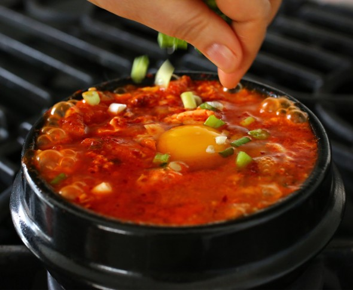

Sundubu Jjigae is a versatile and staple soup in Korea. This particular recipe comes from anouther popular youtuber,Maangchi!
I love this soup because not only is it bubbling hot, but the chili base is a must for people that enjoy spicier foods. This womans entire channel I came across reading a particularly
sad story, however it yielded in a very bittersweet ending and a wonderful channel I can't stop coming back for. Soup is such a comfort food, and this one takes a very high tier.
Maangchi's Sundubu Jjigae
Ingredients
8 large dried anchovies, heads and guts removed
5 ounces of radish, peeled, washed, and sliced thinly
Dried Kelp (6 x 4 inch piece)
2 tbsp Hot Pepper Flakes
1 tsp Toasted Sesame Oil
1 tsp Vegetable Oil
1/2 cup Pork Belly(or any cut of pork: 2.5 ounces), cut into small pieces
1/4 cup Chopped Onion
1 clove Minched Garcic
1 Green Onion, chopped
1/2 cup well fermented kimchi
1 tsp Kosher Salt
1/2 teaspoon Sugar
1 tube/square of Soft Tofu (Sundubu)
1 egg
LET'S MAKE THIS SHID
Make Anchovy Kelp Stock
- Put dried anchovies, radish, dried kelp, and 4 cups of water in a pot. Cover and boil over medium high heat for 10 minutes until it starts boiling.
- Reduce the heat to low and boil another 20 minutes
- Remove from the heat and strain. It will make about 2 cups of stock.
MAKE SPICY PASTE
- Combine the hot pepper flakes and the sesame oil in a small bowl and mix well.
PUT IT ALL TOGETHER
- Heat up a 3 cup earthenware pot (ttukbaegi) on the stove over medium high heat for about 3 to 4 minutes. If you use a small heavy pan or pot, it will take less.
- Add the vegetable oil, onion, and garlic. Stir it with a
wooden spoon for 1 minute.
- Add the pork. Stir for 2 minutes until the pork is no longer pink.
- Add kimchi and keep stirring for a minute. Add ½ cup anchovy stock. Cover and cook for 7 minutes over medium heat.
- Add the salt and the sugar and mix well.
- Cut the tube of soft tofu into half and squeeze it out into the pot. Gently break up the tofu with a wooden spoon. If you want, add a few tablespoons of stock.
- Put the hot pepper mixture on top and spread it with the spoon.
- Crack the egg and put it on top, in the center of the stew. Let it bubble and sizzle for 1 minute.
SERVE
- Sprinkle with the chopped green onion and serve with rice and a few more side dishes.